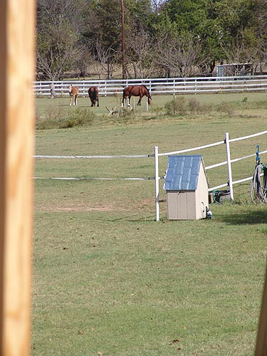
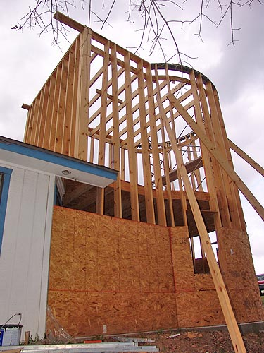
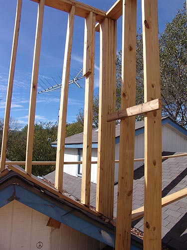
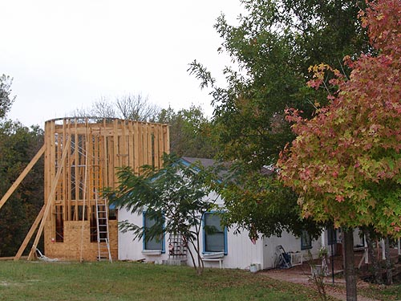

We've Got a Third Floor
(well, almost)
If the rain would hold off and we could
get two days
work in, we could get a lot more done.
As it was, the second
floor went in pretty quickly and we have
to start thinking about
the stairs and roof lines. I was exhausted
by time we finished,
but it's neat to see progress.
Before the rain started, we got most
of the floor joists up for the third floor.

Here's the view from the second story
window. Finally a window with a good view of the pasture.

I climbed up to the third floor to
see the view from there. It's really impressive. Looking down and treetops
and seeing the layout of the property.

Strange connections to the existing
roof, but we've discussed how it all ties in, and it seems like it'll work
out ok.

Still have another 10 feet up to go.
Lynn says he'll be using a safety harness when he's up on the scaffold
on top of the third floor.
What's funny is that we're getting used
to this height, and it almost seems short (well except when you're climbing
up the scaffold to the third level.